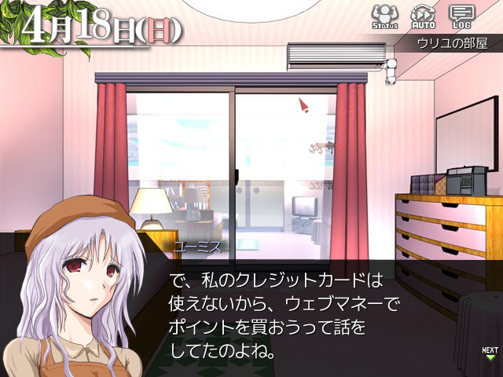
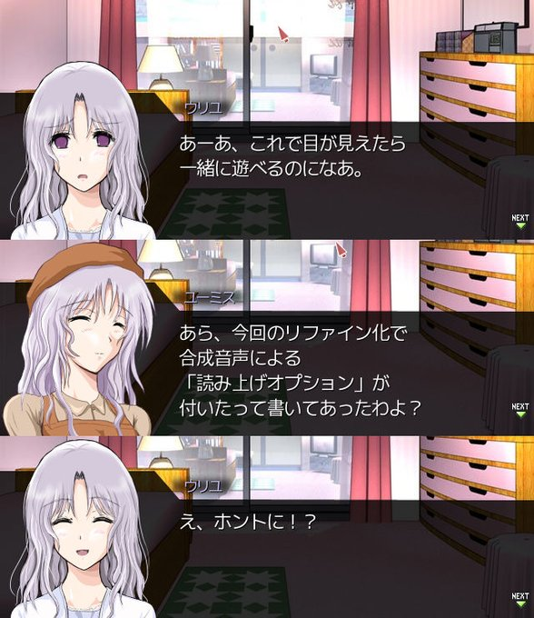
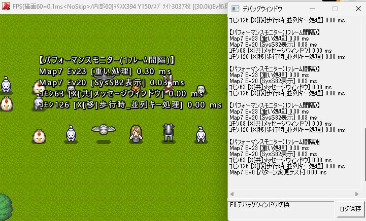
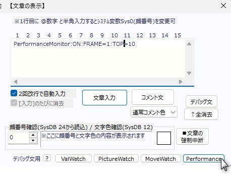

■2026-04-18 (土) シル学PV＋体験版公開 ＆ ウディタにパフォーマンスモニター機能！▼
ということで『シルフェイド学院物語』リファイン版発売から2週間ちょっとが経ちましたがいかがお過ごしでしょうか！
おかげさまでおととし～去年の間に減ってしまった開発資金もだいぶ戻りそうで、しばらく開発が続けられそうな雰囲気になっています！
今回の内容はこの2週間で進めたことのまとめです！
シル学の紹介動画作成や体験版作り、そしていつも通りウディタの修正ですね！
長さは約2分です！ ゲームシステム紹介や選べる住居、クラス（メインシナリオ）、その他諸々の紹介です。
いつものことながら、ゲームの紹介動画ってものすごく作るのが億劫なんですよ！
いい部分を伝えようとは思うのですが、だいたい動画を作る頃の時期って自作品に自信を失ってることが多いので、紹介する意欲があまり持てないことがあるんですよね。
それにガッツリ動画を作ってないので動画脳に切り替えるのも大変！
もっと気軽に作っていいとは思うので、動画作りも慣れていきたいです。
普段からミニ動画をジャンジャン作って経験値も上げていきたい！
今ごろになりましたが、DLsiteさんちのストアページに体験版をアップしました！
購入方法の会話もいちおうDLsiteさんのページに準拠した形になっています！
ウェブマネーを買ってくるという昔の体験版の軸はそのままですが、ユーミス（ウリユ母）のクレジットカードがDLsiteさんちで使えないからウェブマネーを買ってそれでポイント買おうという流れになります（PayP●yじゃダメなの、というツッコミもありつつ）。
↓ はからずもウリユが喜ぶ読み上げ機能が新しくリファイン版に入っていた話
ご自身のパソコンで動作するか不安だった方は、よければ体験版で動作確認をお試し下さい！
体験版でもユーザデータをダウンロードする流れを体験できるので、気になる方はそちらもどうぞ。
さすがにそろそろ必要だと思って簡易なパフォーマンスモニター（イベント負荷計測機能）を付けました！
たとえば処理が重くなった！ どこが重いか知りたい！ そういうときに使います！
動画を見るのが一番分かりやすいので見られるかたはこちらからどうぞ！
以下は詳細説明！
パフォーマンスモニターの結果は、デバッグウィンドウ（右側）にこんな風に表示されます！
また、システム文字列の「SysS82：パフォーマンスモニター最終出力文」を使って同じ内容を画面に表示することもできます！（左側）
使い方は簡単！
上記のように
PerformanceMonitor:ON:FRAME=1:TOP=10
のように記述して「デバッグ文」として実行すると、以後、「1」フレームごと(FRAME=1)に、上位「10」位(TOP=10)の高負荷なイベント順に出力してくれます。
といっても初期値の1フレームだと1秒間に60回の超高速でデバッグウィンドウを流れていってしまうので、「30」フレーム（0.5秒ずつ）くらいにするのが便利かもしれません。
（なお、フレーム数を増やすとその間の累積時間が表示されます）
このパフォーマンスモニター、以下のようなオプション設定も搭載されています！
基本は FRAME と TOP だけでも十分使えますが、さらに細かい調整も可能です。
●「FRAME」の値を増やすと、そのフレーム間隔で処理時間が出力されます。
●「TOP」の値を変えると、その順位分だけを出力することができます。
↓ ※ここから上級者向け
●「ON」のところを「ON2」にすると、デバッグ文には表示されなくなり、
システム文字列「SysS82:[読]ﾊﾟﾌｫｰﾏﾝｽﾓﾆﾀｰ最終出力文」にのみ出力されます。
●任意の場所に「:MICRO_SEC」を追加すると、表示される時間の単位がms（ミリ秒）でなくus（マイクロ秒、1us=1/1000ms）になります。 ※本当はマイクロ=μ表記ですけどuで代用しています。
●任意の場所に「:OVER=1.2」という風に追加すると「1.2ms以上の処理時間のイベントのみ表示するように」かつ、「1つも条件を満たさないときは何も表示されなくなる」ようになります。
●任意の場所に「:NO_TITLE」を追加すると、先頭の「【パフォーマンスモニター(1ﾌﾚｰﾑ間隔)】」の文字列が表示されなくなります。
処理が重くなって原因が分からず困っている方は、このパフォーマンスモニター機能をぜひご利用ください！
ということで、残った仕事などを進めていた2週間でした！
残る作業は、シルバーセカンド公式の『ライセンスキー版シル学』をリファイン版へ更新すること（無料でアップデート可能です！）や、シル学サイトの修正など！
4月中にはシル学関連を片付けてスッキリさせて、5月から『片道勇者2』など自由な開発に戻りたいですね！ がんばりまーす！
おかげさまでおととし～去年の間に減ってしまった開発資金もだいぶ戻りそうで、しばらく開発が続けられそうな雰囲気になっています！
今回の内容はこの2週間で進めたことのまとめです！
シル学の紹介動画作成や体験版作り、そしていつも通りウディタの修正ですね！
◆シルフェイド学院物語 紹介動画を作成！
難産だった『シルフェイド学院物語』の紹介動画、ようやく完成しました！長さは約2分です！ ゲームシステム紹介や選べる住居、クラス（メインシナリオ）、その他諸々の紹介です。
いつものことながら、ゲームの紹介動画ってものすごく作るのが億劫なんですよ！
いい部分を伝えようとは思うのですが、だいたい動画を作る頃の時期って自作品に自信を失ってることが多いので、紹介する意欲があまり持てないことがあるんですよね。
それにガッツリ動画を作ってないので動画脳に切り替えるのも大変！
もっと気軽に作っていいとは思うので、動画作りも慣れていきたいです。
普段からミニ動画をジャンジャン作って経験値も上げていきたい！
◆『シルフェイド学院物語』 体験版公開！
そしてこちらは体験版の話！今ごろになりましたが、DLsiteさんちのストアページに体験版をアップしました！
購入方法の会話もいちおうDLsiteさんのページに準拠した形になっています！

ウェブマネーを買ってくるという昔の体験版の軸はそのままですが、ユーミス（ウリユ母）のクレジットカードがDLsiteさんちで使えないからウェブマネーを買ってそれでポイント買おうという流れになります（PayP●yじゃダメなの、というツッコミもありつつ）。
↓ はからずもウリユが喜ぶ読み上げ機能が新しくリファイン版に入っていた話

ご自身のパソコンで動作するか不安だった方は、よければ体験版で動作確認をお試し下さい！
体験版でもユーザデータをダウンロードする流れを体験できるので、気になる方はそちらもどうぞ。
◆【ウディタ新機能】パフォーマンスモニター（イベント負荷計測）追加！
そしてこちらはこの2週間でウディタに入れた新機能の話！さすがにそろそろ必要だと思って簡易なパフォーマンスモニター（イベント負荷計測機能）を付けました！
たとえば処理が重くなった！ どこが重いか知りたい！ そういうときに使います！
動画を見るのが一番分かりやすいので見られるかたはこちらからどうぞ！
以下は詳細説明！

パフォーマンスモニターの結果は、デバッグウィンドウ（右側）にこんな風に表示されます！
また、システム文字列の「SysS82：パフォーマンスモニター最終出力文」を使って同じ内容を画面に表示することもできます！（左側）
使い方は簡単！

上記のように
PerformanceMonitor:ON:FRAME=1:TOP=10
のように記述して「デバッグ文」として実行すると、以後、「1」フレームごと(FRAME=1)に、上位「10」位(TOP=10)の高負荷なイベント順に出力してくれます。
といっても初期値の1フレームだと1秒間に60回の超高速でデバッグウィンドウを流れていってしまうので、「30」フレーム（0.5秒ずつ）くらいにするのが便利かもしれません。
（なお、フレーム数を増やすとその間の累積時間が表示されます）
このパフォーマンスモニター、以下のようなオプション設定も搭載されています！
基本は FRAME と TOP だけでも十分使えますが、さらに細かい調整も可能です。
●「FRAME」の値を増やすと、そのフレーム間隔で処理時間が出力されます。
●「TOP」の値を変えると、その順位分だけを出力することができます。
↓ ※ここから上級者向け
●「ON」のところを「ON2」にすると、デバッグ文には表示されなくなり、
システム文字列「SysS82:[読]ﾊﾟﾌｫｰﾏﾝｽﾓﾆﾀｰ最終出力文」にのみ出力されます。
●任意の場所に「:MICRO_SEC」を追加すると、表示される時間の単位がms（ミリ秒）でなくus（マイクロ秒、1us=1/1000ms）になります。 ※本当はマイクロ=μ表記ですけどuで代用しています。
●任意の場所に「:OVER=1.2」という風に追加すると「1.2ms以上の処理時間のイベントのみ表示するように」かつ、「1つも条件を満たさないときは何も表示されなくなる」ようになります。
●任意の場所に「:NO_TITLE」を追加すると、先頭の「【パフォーマンスモニター(1ﾌﾚｰﾑ間隔)】」の文字列が表示されなくなります。
処理が重くなって原因が分からず困っている方は、このパフォーマンスモニター機能をぜひご利用ください！
ということで、残った仕事などを進めていた2週間でした！
残る作業は、シルバーセカンド公式の『ライセンスキー版シル学』をリファイン版へ更新すること（無料でアップデート可能です！）や、シル学サイトの修正など！
4月中にはシル学関連を片付けてスッキリさせて、5月から『片道勇者2』など自由な開発に戻りたいですね！ がんばりまーす！